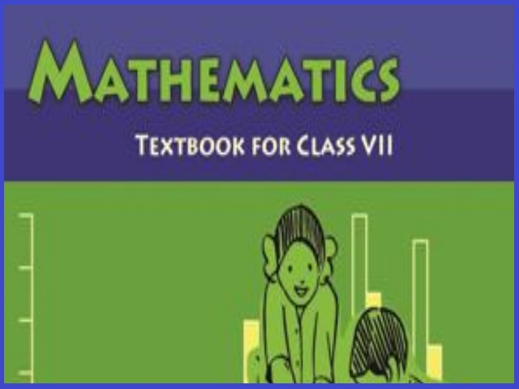
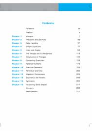

Maths7 tuto
Maths7 tuto
------------------------------------------------------------------------------------------------------------------------------------------------------------------------------------------------------------------------------------------------------------------------------------------
The National Council of Educational Research and Training (NCERT) publishes maths textbooks for Class 7.
The NCERT Class 7th maths textbooks are well known for it’s updated and thoroughly revised syllabus.
The NCERT maths Books are based on the latest exam pattern and CBSE syllabus. NCERT has a good image
when it comes to publishing the study materials for the students. NCERT keeps on updating the maths
books with the help of the latest question papers of each year. The Class 7 Sanskrit books of NCERT are
very well known for its presentation. The use of these books is not only suitable for studying the regular
syllabus of various boards but it can also be useful for the candidates appearing for various competitive exams.
We hope that this detailed article on NCERT Class 7 maths Books helps
you in your preparation to score good marks. Refer CBSE Class 7 maths
Previous Year Questions to know pattern of questions asks in the exam.
 NCERT Class 7 math Books are provided in PDF form so that students can access it at anytime anywhere
NCERT BOOK CHAPTERS OF MATH :--
Introduction + starting of book
Chapter 2 Fractions & Decimals
Chapter 6 The Triangle and its Properties
Chapter 7 Congruence of Triangles
Chapter 8 Comparing Quantities
Chapter 12 Algeabric Expression
Chapter 15 Visualising Solid Shapes
We hope the given NCERT Solutions for Class 7 Mathematics
(NOTE : PDF SOURCE = ncert.guru.com)